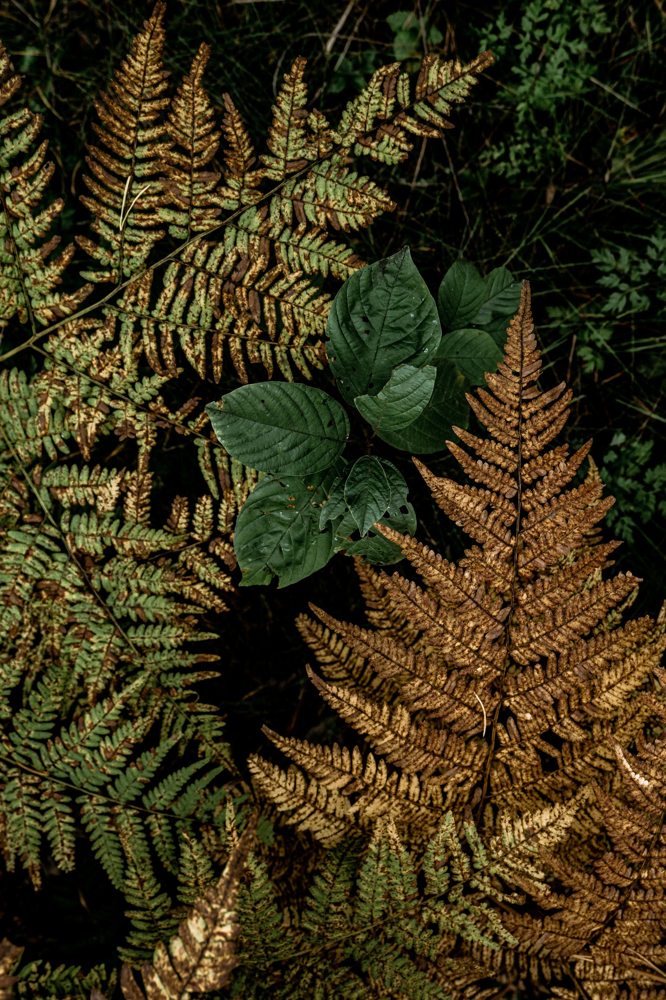
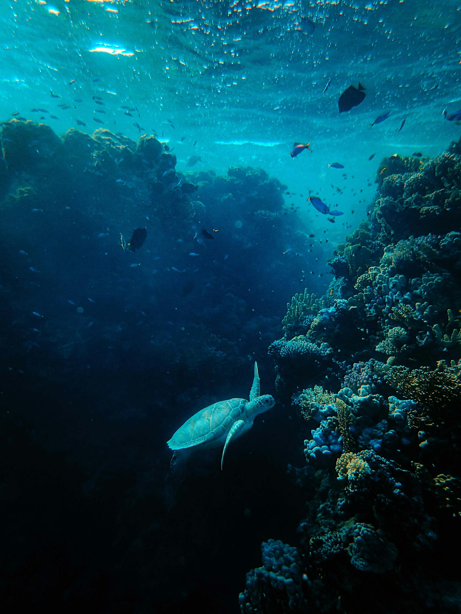
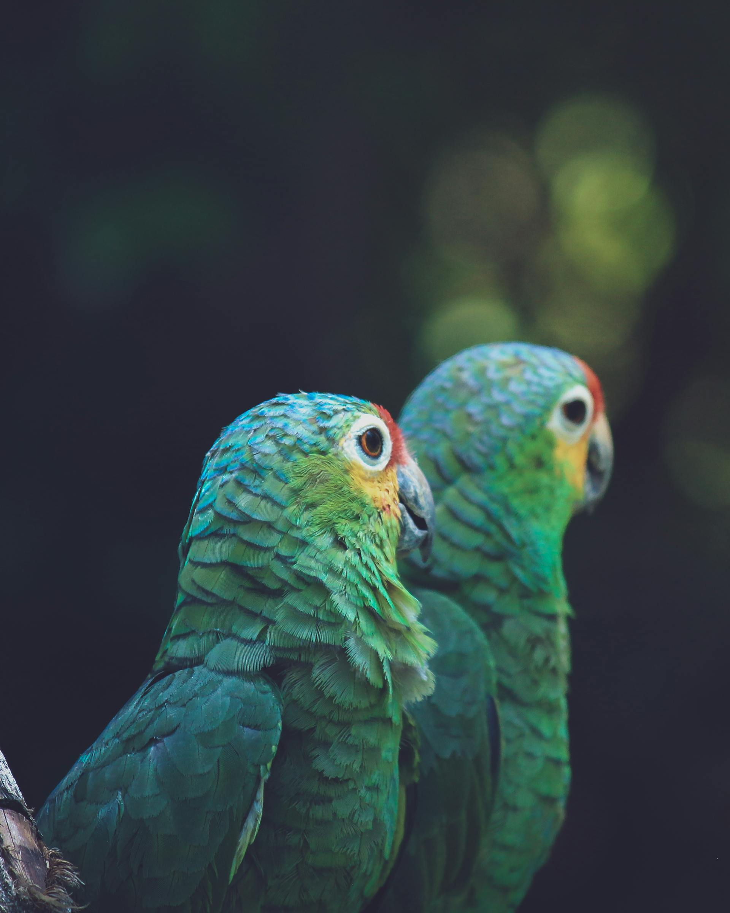

Современные исследования в области биоразнообразия
Главная
Исследования
Новости
Контакты
Название
Регион
Дата
Описание
Ссылка
  
Больше статей на тему экологии и биоразнообразия можно найти в журналах:
Journal of Biodiversity
Ecology Letters
Nature Climate Change
Global Change Biology